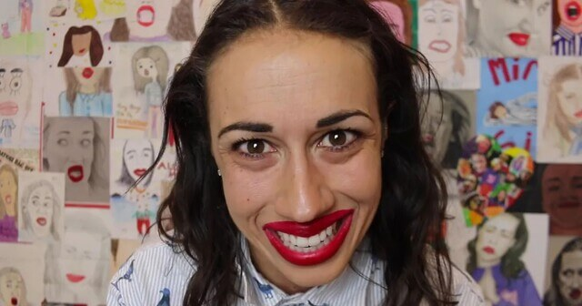

Collen Ballinger is a famous comdeian known for her eccentric portrayl of a incompitant egotistical internet
character, Miranda Sings. She says her content is aimed for kids but is it really?

====Crime/Allegation List====
Summary of Crimes/Allegation
Sexual Communtaction with muiltple minors: 5 Wiengers chat group full of minors and discusses topics
unsuited for childern.
Unpaid labor: McIntyre and other former fans claimed that Ballinger used them for unpaid social media
work for her Miranda Sings character.
Grooming Minors
Emotional manipulation
Inappropriate Interactions with minors:
During one of her shows having a kid reach into her pants for cheese balls
Sending a minor underwear
Calling a underage fan to stage to participate in the “yoga challenge” where Colleen Ballinger
(as Miranda Sings) lifted her legs above her head and spread them wide
Sharing Inappropriate Images: Sharing nudes of another youtuber to minors
While the following is not realted to minors its still important to note and ⚠ ALLEGEDLY ⚠
Adultry(Cheating)
Abusive to her Husband
====Victims====
List of victums and there documentary
Adam McIntyre: parasoial relationship, and was groomed
"Colleeny's Weenies" group chat: Most of which were minors at the time including Adam McIntyre
Johnny Silvestri: parasoial relationship, was shared Inappropriate images
Trisha Paytas: Had her nudes sent to minors without her consent
Becky: The on-stage bit involved Ballinger having the fan lie down, separating her legs, and playing
a fart noise